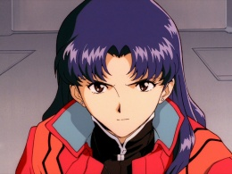
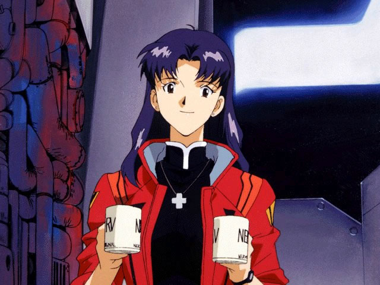

Misato Katsuragi é uma das protagonistas de Neon Genesis Evangelion. Ela é comandante do NERV e se destaca por sua personalidade carismática, determinada e maternal ao longo da história.
No início da série, Misato leva Shinji Ikari para a NERV e consegue convencê-lo a pilotar a Unidade Evangelion-01. Ela então decide que Shinji vai morar com ela em vez de viver sozinho e, mais tarde, acolhe Asuka Langley Soryu. Conforme a série avança, através de seu antigo amor, Ryoji Kaji, Misato descobre a verdade por trás do Projeto de Instrumentalidade Humana e a extensão do engano que a NERV e a SEELE usaram para manter o projeto em segredo, até mesmo dela.

Deixe sua nota e sua opinião sobre a Rei Ayanami abaixo.